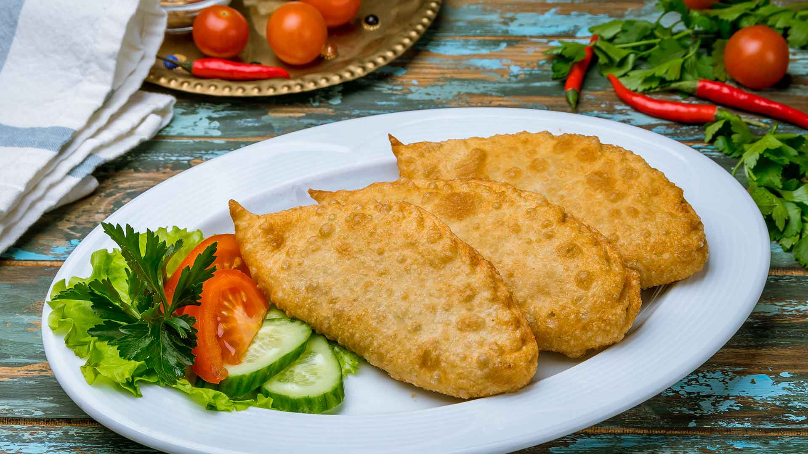

How to Make Mongolian Fried Meat Pie aka "Khuushuur"
Ingredients
- 500g ground beef or mutton
- 1 large onion, finely chopped
- Salt and pepper to taste
- Vegetable oil, for frying
- Round dumpling wrappers or homemade dough
Instructions:
- Mix the ground meat with chopped onion, salt, and pepper in a bowl.
- Take a portion of the meat mixture and place it in the center of a dumpling wrapper or rolled-out dough.
- Fold the wrapper over the filling to form a half-moon shape and press the edges to seal tightly.
- Heat vegetable oil in a frying pan over medium heat.
- Fry the khuushuur in batches until golden brown and crispy on both sides, about 3-4 minutes per side.
- Drain on paper towels to remove excess oil.
- Serve hot with ketchup, soy sauce, or any preferred dipping sauce.
Voila, bon appetit! or "Saihan Hoollooroi!" in Mongolian.
